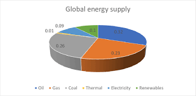

INDIAN ENERGY RESOURCES ANALYSIS
India's energy consumption landscape is undergoing significant transformation, reflecting its rapid economic growth, urbanization, and ongoing efforts to balance traditional energy sources with renewable alternatives. Here's an overview of India's energy usage based on the latest available data:
Energy Consumption
Primary Energy Consumption: In 2023, India's primary energy consumption was approximately 36 quadrillion British thermal units (Btu).
EIA
Capita Energy Consumption: For the fiscal year 2023-24, India's per capita energy consumption stood at about 27.3 gigajoules (GJ), notably lower than the global average.
Bee India

Electricity Consumption and Generation
Annual Consumption: In December 2024, India's power consumption increased by nearly 6% to 130.40 billion units compared to December 2023.
The Economic Times
Peak Demand: The highest supply in a day rose from 213.62 GW in December 2023 to 224.16 GW in December 2024.
The Economic Times
Power Generation Mix: In 2024, coal's share in India's power generation mix decreased to 74.4%, down from 75% in 2023. This decline was accompanied by a record increase in renewable energy's contribution, reaching 12.1% of the power generation mix.
Reuters

Energy Source Breakdown
Coal: Despite a slight decrease in its share, coal remains a dominant energy source, constituting approximately 74.4% of the power generation mix in 2024.
Energy: Renewable energy sources have seen significant growth, with their share in power generation reaching a record 12.1% in 2024.
Reuters
Gas: Natural gas consumption is projected to grow, with expectations of reaching 36 billion cubic meters (Bcm) by 2050 under the current trajectory, up from 30 Bcm in 2022.
bp global

Future Projections
Energy Growth: India's primary energy consumption is projected to grow by 90% by 2050 under the current trajectory, and by 21% in a net-zero scenario.
bp global
Renewable Energy Expansion: In both scenarios, renewable energy is expected to grow strongly, becoming the largest energy source in a net-zero pathway by 2050.
bp global
Natural Gas Role: Natural gas is anticipated to be the only fossil fuel to grow in absolute terms by 2050 in both scenarios, driven by sectors like power, road transport, and industry.
bp global
Recent Developments
Coal Production Milestone: India achieved a significant milestone by producing 1,000 million tons of coal in the fiscal year 2024, a record celebrated by Prime Minister Narendra Modi. However, this achievement has raised concerns among international experts regarding its alignment with global carbon reduction goals.
BACK